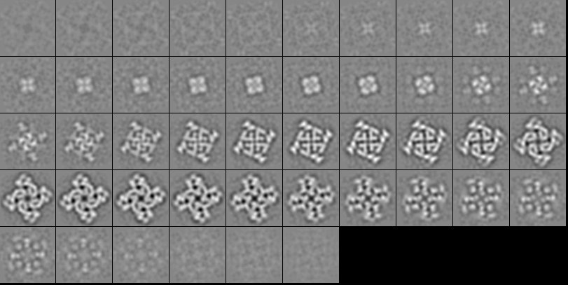
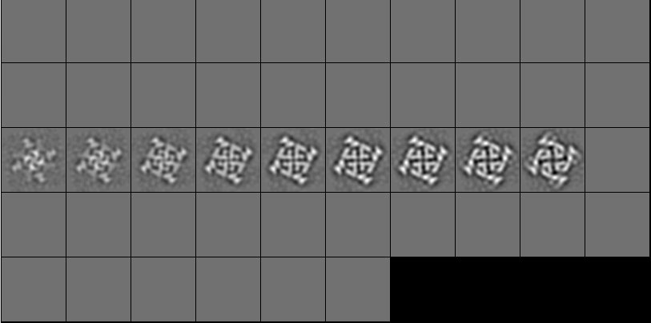

| .OPERATION: | MA Z | ; Mask in Z direction |
| .INPUT FILE: | sav_crc_vol | ; Volume name (input) |
| .OUTPUT FILE: | maz | ; Volume name (output) |
| .OUTER & INNER HALFWIDTH EXTENTS: | 4 | ; Outer halfwidth extent of mask |
| .DISK, COSINE, GAUSSIAN EDGE OR TRUE GAUSSIAN (D/C/G/T): | D | ; Mask type |
| .AVG, PREV AVG, CIRCUMF, OR EXTERNAL BACKGROUND? (A/P/C/E): | AVG | ; Background type |
| .Z CENTER OF MASK OR <CR&gr; FOR VOLUME CENTER: | 25 | ; Center of mask |
| INPUT VOLUME (Slices) |
|---|
|  |
| sav_crc_vol |
| OUTPUT VOLUME (Slices) |
|---|
|  |
| maz |